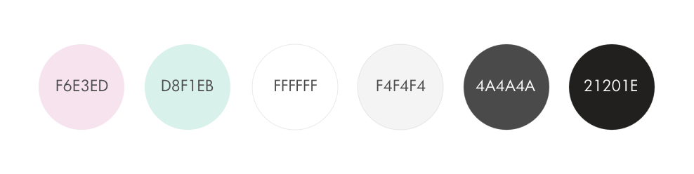
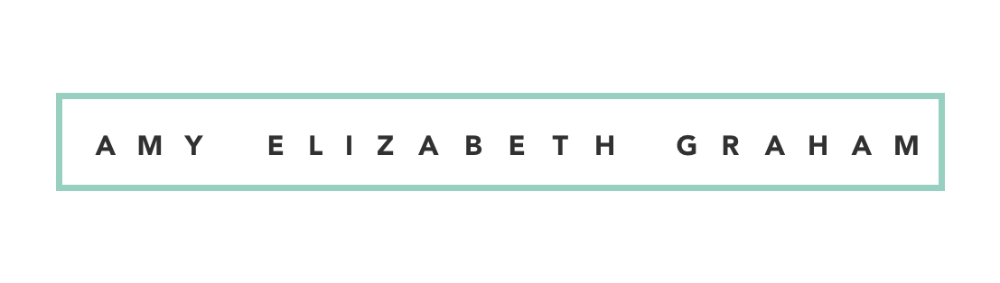
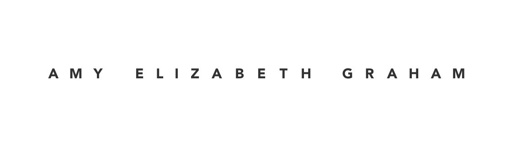

COLOUR SCHEME

Strictly stick to the provided colour scheme. The pale pink, mint and white are to be used as background colours with complimentary colours to be used in contrast.
MONOGRAM
RULES
Leave padding of at least 20px around the visual marque to ensure breathing space.
Do not flip, rotate, or crop the design from its original source.
Do not distort the colours used as they are designed strictly to my colour palette.
Do not use for commericial or personal use. e.g dropcap projects etc.
Only use the black one at a small scale and the geometric coloured one at a large scale.
WORDMARK


RULES
At this scale, only use the word mark by itself for use in headers, footers etc
Do not change fonts, rescale as it will lose its legibility
Only pair with monogram as shown above & do not rescale also shown above. Only use the monogram at a small scale
VISUAL MARQUE
RULES
Only overlay marque on provided backgrounds with their opacity at 30%
Do not recreate or flip visual marque
Do not colour in visual marque
Dont use marque with either the monogram or word mark